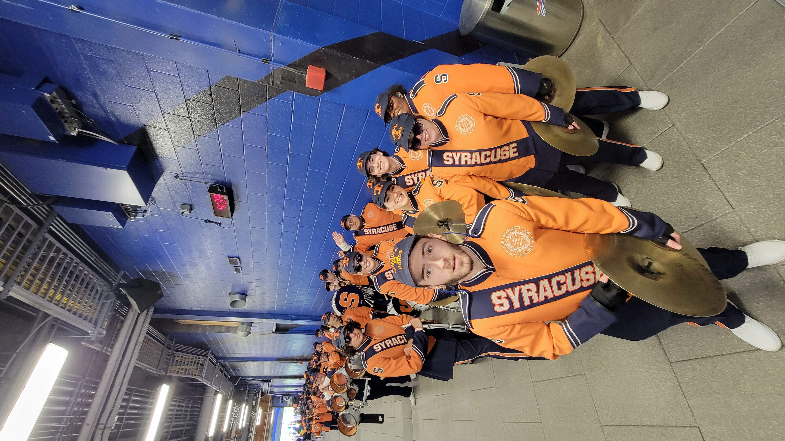
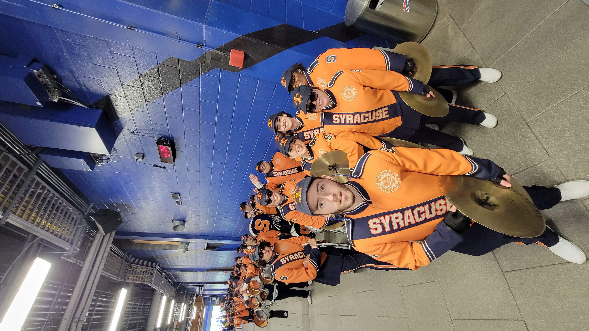

Welcome to the Syracuse University Drumline!
The SU Drumline has served as the backbone of the Pride of the Orange for decades. Under the direction of Dr. Rob Bridge and Jesse Doan, the Syracuse University Drumline is one of the most exciting parts of a gameday experience. Whether we’re throwing down on the quad or hyping up fans in the stands during the football games, there’s always something exciting going on when you join our ranks. The drumline is one of the most active parts of every gameday, performing both on and off the field, as well as around campus. The drumline will also travel with the rest of the band for other events, such as our performance at a Buffalo Bills game this past year, or our recent trips to Boca Raton and San Diego for bowl games.
 
